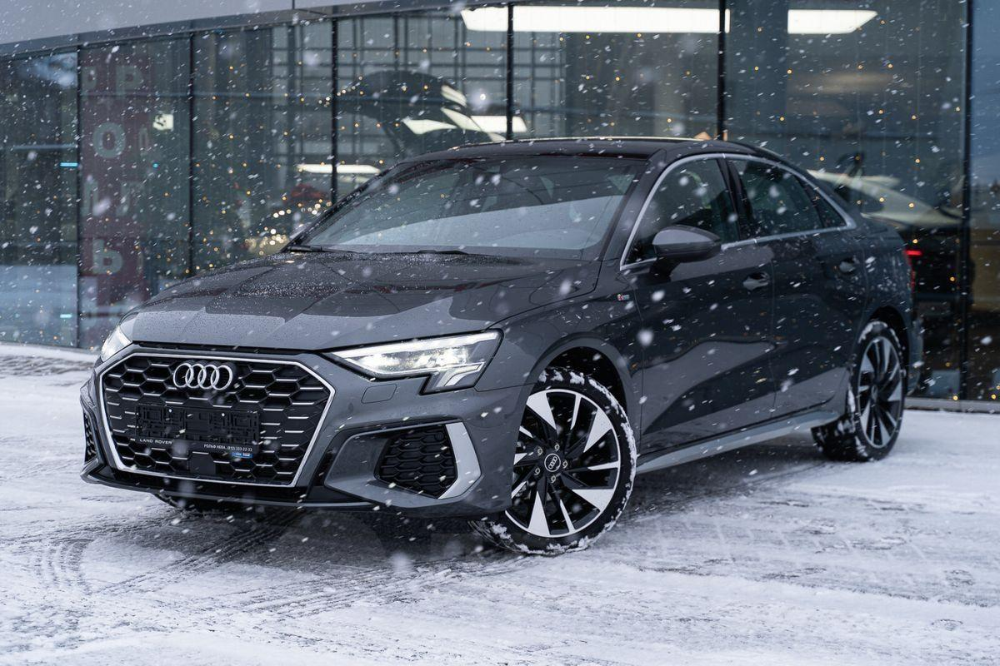

О модели
Audi A3 8Y — это компактный премиальный автомобиль, сочетающий в себе современные технологии, динамичные характеристики и элегантный дизайн.
Характеристики
Двигатель: 1.5L TFSI / 2.0L TDI
Мощность: 150–200 л.с.
Разгон 0-100 км/ч: 7,0–8,0 сек
Максимальная скорость: 220–240 км/ч
Дизайн

Современный и стильный дизайн, передовые светодиодные технологии, высококачественные материалы в интерьере и интуитивно понятная цифровая панель управления.
Более подробная информация об этой машине

Нажав по картинке выше, вы можете перейти на сайт и ознакомиться с тем, что не увидели у нас.